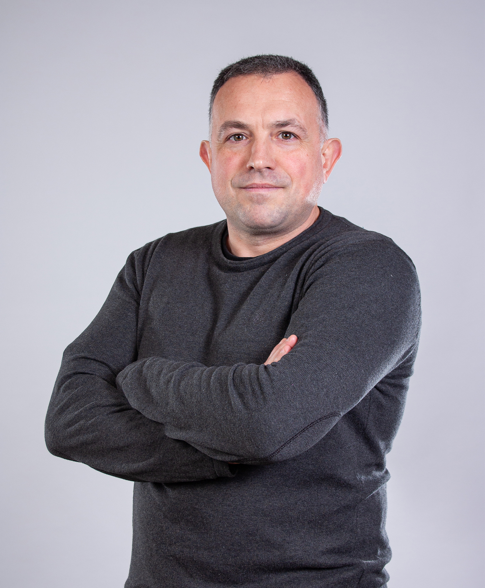
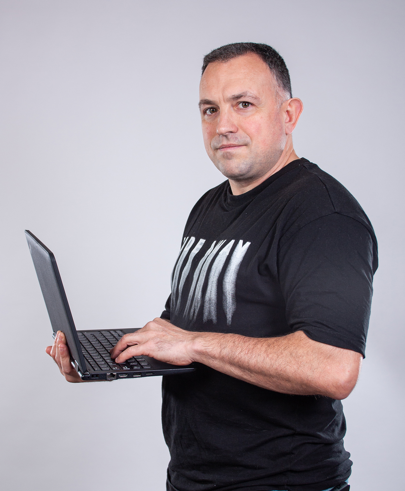
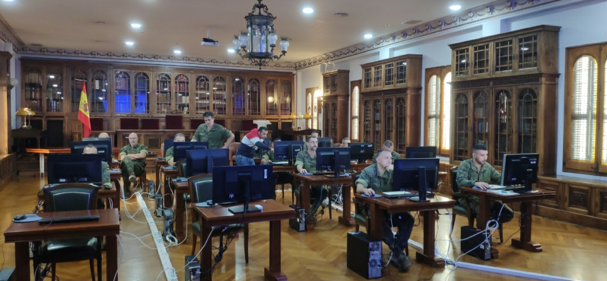

2025 · Actualidad
Cap de Equip · PRBB
Organización diaria del equipo, asignación de tareas, cuadrantes, coberturas, comunicación con el cliente y cumplimiento de protocolos en un entorno crítico de investigación.
Coordinación · Operaciones · Seguridad · Tecnología
Profesional con amplia trayectoria en coordinación de equipos, planificación de servicios, gestión de incidencias, comunicación con clientes y aplicación de procedimientos en entornos exigentes y regulados.

Perfil profesional
He desarrollado mi carrera en entornos exigentes y regulados, combinando coordinación de personas, planificación, documentación, resolución de incidencias y atención al cliente.
Mi etapa en la Sección de Sistemas de Información del Ministerio de Defensa incluyó administración de sistemas y redes, soporte a usuarios, Active Directory, gestión de software corporativo y control de procedimientos. Actualmente curso el Grado Superior en Administración de Sistemas Informáticos en Red con especialización en ciberseguridad.
Mi objetivo es aportar esta experiencia en puestos de coordinación, supervisión, operaciones, seguridad y gestión de servicios, incorporando además competencias digitales y conocimientos de sistemas.
Experiencia
Organización diaria del equipo, asignación de tareas, cuadrantes, coberturas, comunicación con el cliente y cumplimiento de protocolos en un entorno crítico de investigación.
Planificación de turnos, cobertura de ausencias, coordinación operativa, seguimiento de servicios, gestión de incidencias y elaboración de reportes.
Supervisión de personal operativo, elaboración de protocolos, solución de incidencias e interlocución con responsables de servicio.
Administración de sistemas y redes, Active Directory, soporte a usuarios, software corporativo, documentación técnica e instrucción de equipos en entornos regulados.
Gestión de incidencias, control operativo y coordinación con servicios externos en la red de Metro de Barcelona.
Competencias
Asignación de funciones, seguimiento diario, comunicación y resolución de necesidades operativas.
Cuadrantes, turnos, coberturas, priorización de tareas y redistribución de recursos.
Evaluación, registro, escalado, seguimiento y cierre con criterio operativo.
Elaboración, aplicación y control de procedimientos, reportes y documentación.
Interlocución profesional, comprensión de necesidades y seguimiento del servicio.
Microsoft Office, SAP, Fremmática, sistemas, redes y soporte técnico.
Trayectoria

Experiencia en planificación de turnos, coberturas, asignación de tareas, seguimiento diario y resolución de incidencias.

La trayectoria militar y la etapa como cabo de sistemas aportan disciplina, administración técnica, soporte a usuarios, documentación y coordinación.
Formación
Administración de sistemas, redes, virtualización y seguridad.
Certificado de formación permanente, 20 ECTS.
Formación certificada en HTML, CSS, JavaScript, responsive web design y publicación.
15 ECTS / 375 horas, con calificación de apto sobresaliente.
Actualización relacionada con administración de sistemas y comunicaciones.
Universitat Jaume I, rama de Ciencias Sociales y Jurídicas.
Contacto
Disponible para oportunidades profesionales en coordinación, supervisión, operaciones, seguridad y gestión de servicios.